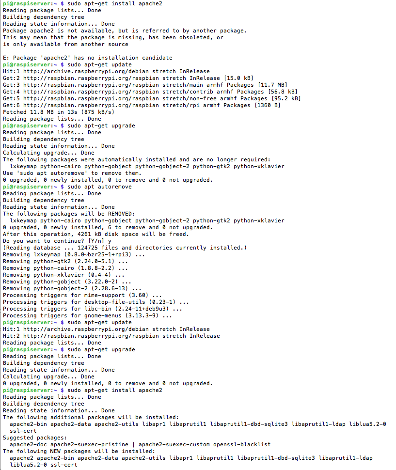
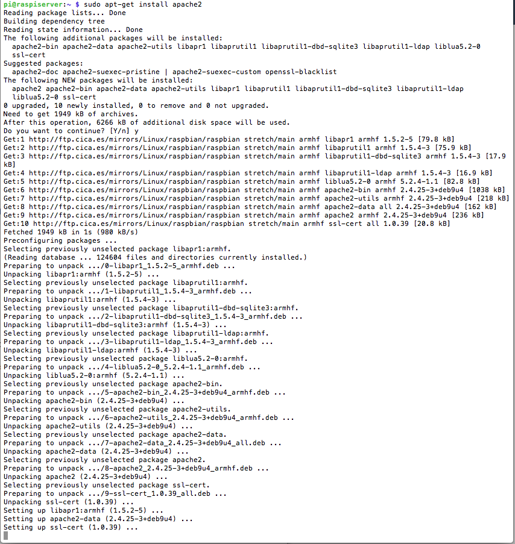
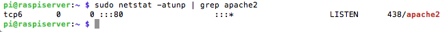
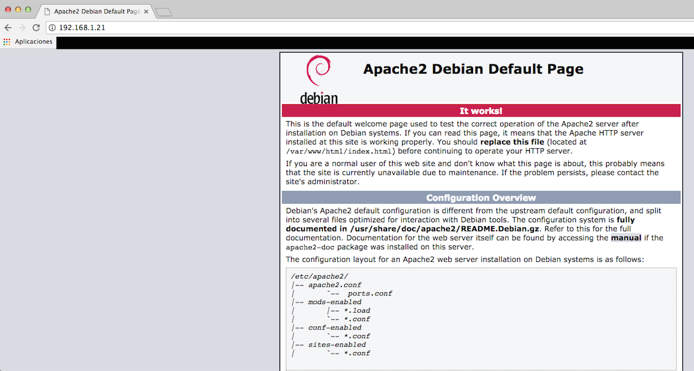

LAMP el acrónimo usado para describir un sistema de infraestructura de internet que usa las siguientes herramientas:
La combinación de estas tecnologías es usada principalmente para definir la infraestructura de un servidor web, utilizando un modelo de programación para el desarrollo. A pesar de que el origen de estos programas de código abierto no han sido específicamente diseñados para trabajar entre sí, la combinación se popularizó debido a su bajo coste de adquisición y ubicuidad de sus componentes (ya que vienen pre-instalados en la mayoría de las distribuciones linux). Cuando son combinados, representan un conjunto de soluciones que soportan servidores de aplicaciones.
El servidor HTTP Apache es un servidor web libre y de código abierto, para plataformas Unix (BSD, GNU/Linux, etc.), Microsoft Windows, Macintosh y otras, que implementa el protocolo HTTP/1.12 y la noción de sitio virtual, el más popular en cuanto a uso, sirviendo de facto como plataforma de referencia para el diseño y evaluación de otros servidores web. Por sí mismo, es capaz de servir ficheros HTML sobre HTTP y, con la instalación de ciertos módulos adicionales, puede servir también páginas dinámicas utilizando lenguajes de scripting tales como PHP. Entre sus ventajas destaca q es muy modular, de código abierto, multi-plataforma, extensible y muy popular (fácil conseguir ayuda/soporte).La arquitectura del servidor Apache consta de una sección core y diversos módulos que aportan mucha de la funcionalidad que podría considerarse básica para un servidor web. Algunos de estos módulos son:
El servidor de base puede ser extendido con la inclusión de módulos externos entre los cuales se encuentran:
El servidor Apache es desarrollado y mantenido por una comunidad de usuarios bajo la supervisión de la Apache Software Foundation dentro del proyecto HTTP Server (httpd).
Para la instalación del servidor Apache, sólo hay que ejecutar la siguiente orden: $ sudo apt-get install apache2 (con la opción -y se contesta automáticamente yes=si, cuando pregunta si se desea instalar paquetes). Puede pasar que al ejecutar el comando anterior devuelva un mensaje de error que se subsana ejecutando $sudo apt-get update y $sudo apt-get upgrade:

En la captura anterior se puede observar como después del mensaje de error y de la ejecución de las órdenes update y upgrade, se devuelve otro mensaje diciendo que hay varios paquetes que ya no son necesarios y que se ejecute el comando $ sudo apt autoremove. Una vez hecho esto, se comprueba que al volver a ejecutar update y upgrade ya está todo actualizado y se procede a la instalación de Apache

Una vez finalizado, es posible comprobar que el servidor se encuentra corriendo y escuchando peticiones en el puerto 80 (HTTP):

Por defecto, Apache crea un fichero de prueba en formato HTML en la carpeta del servidor web. Esta página es servida cuando se navega al servidor apache mediante la dirección http://localhost (desde el propio servidor) o se accede desde otro equipo de la red a la IP del servidor (en este caso: http://192.168.1.21). Si usando un navegador web, se introduce la ip del servidor, se mostrará lo siguiente:

Esto significa que Apache está funcionando correctamente.
Esta página forma parte del proyecto Mini servidor para prácticas ASIR por Nacho López Espert